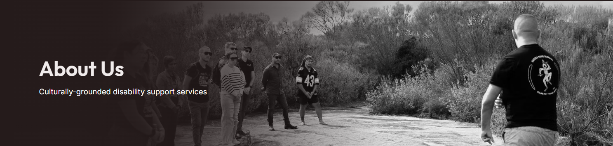

Our services
Supports built around the person, not the plan line
We deliver across four areas, with a strong focus on psychosocial disability and complex trauma histories. Every support is flexible and shaped with you.
Minimum three hour service. We accept agency managed, plan managed and self managed participants.

01
Daily living and personal support
Practical, consistent help at home so independence grows rather than erodes. The same small team wherever we can, because consistency is the support.
Personal care
Hygiene, dressing, grooming and daily routines, delivered with dignity.
Household tasks
Cleaning, laundry, shopping and meal preparation, done alongside you.
Transport and appointments
Getting to medical, legal and community appointments, and being there for them.
Independent living skills
Budgeting, cooking, travel training and tenancy skills that build over time.
02
Therapeutic and psychosocial care
Trauma informed support for people whose disability is psychosocial, and for whom standard supports have not worked before.
Our area of specialisationAllied health access
Occupational therapy, psychology and speech pathology, coordinated around you.
Behaviour support
Positive behaviour support planning and implementation with your practitioner.
Emotional regulation
Day to day strategies for distress, routine and relationships.
Functional capacity
Assessment and reporting that supports plan reviews and funding requests.
03
Community and cultural connection
Connection days, group activities and On Country experiences. Open to every participant, grounded in Aboriginal practice.
Open to all participantsCommunity access
Getting out with support, at a pace that is yours and not a timetable.
Cultural learning days
Group activities led by community, building confidence and belonging.
On Country excursions
Day trips and cultural tours, quoted individually against your plan.
Respite
Short term accommodation and assistance that gives families a break.
04
Support coordination and transitions
Making a plan actually work. We take complex cases, including transitions out of custody and into stable housing.
Complex and crisis referrals welcomePlan implementation
Turning funded supports into booked, delivered services with the right providers.
Crisis and transition
Hands on coordination when housing, health or safety changes suddenly.
Justice transition planning
Supports organised before release, so the first week out is not the hardest.
ILO pathways
Individualised Living Options explored, designed and put to the NDIA.
Who we support
We are Aboriginal owned and led, and we support NDIS participants from every background. Our cultural grounding shapes how we work, not who is welcome.
We take referrals for people aged 7 and over, with a particular strength in psychosocial disability, complex trauma, and participants other providers have found difficult to hold.

Plan types we accept
- NDIA managed (agency)
- Plan managed
- Self managed
Refer someone to us
Participants, families, support coordinators and partner organisations. We come back within two business days.
Or call 0405 969 948 and speak to someone.